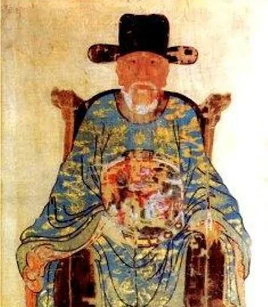
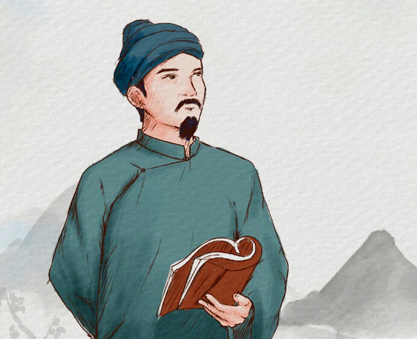
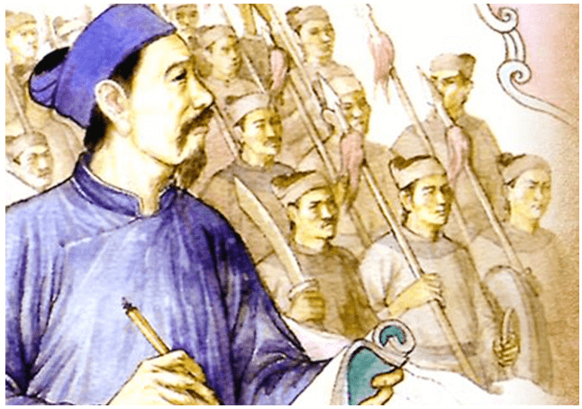
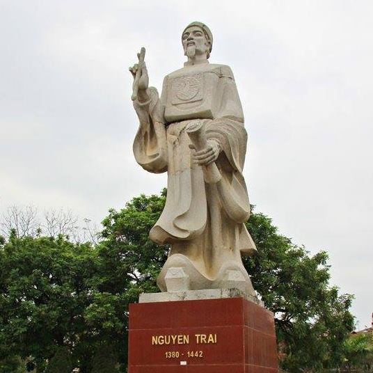
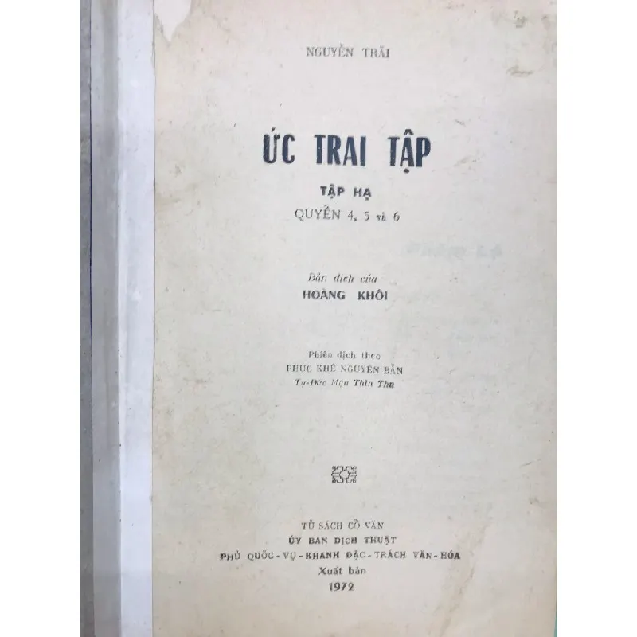
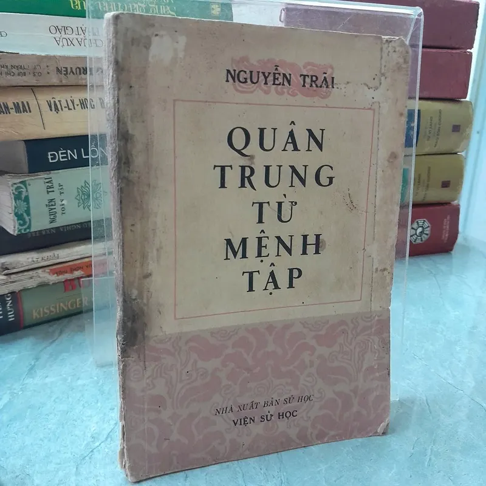

Nguyễn Trãi (1380 – 1442), hiệu Ức Trai, là một trong những nhân vật kiệt xuất nhất của lịch sử Việt Nam. Ông không chỉ là nhà chính trị, nhà quân sự lỗi lạc mà còn là một nhà thơ, nhà văn hóa lớn của dân tộc.
Năm 1380 Nguyễn Trãi sinh ra tại làng Chi Ngại, huyện Phượng Sơn, lộ Lạng Giang (nay thuộc thành phố Chí Linh, tỉnh Hải Dương). Sau đó, ông cùng gia đình dời về làng Nhị Khê (quê cha của ông) (nay thuộc xã Nhị Khê, huyện Thường Tín, Hà Nội) để sinh sống và học tập. Cha ông là Nguyễn Phi Khanh, một trí thức nổi tiếng cuối thời Trần, mẹ là Trần Thị Thái, con gái của quan Tư đồ Trần Nguyên Đán. Nhờ truyền thống học vấn và tinh thần yêu nước của gia đình, Nguyễn Trãi sớm trở thành một người có tài năng và chí hướng lớn.
Khi nhà Minh xâm lược nước ta đầu thế kỷ XV, Nguyễn Trãi tham gia khởi nghĩa Lam Sơn và trở thành mưu sĩ quan trọng của Lê Lợi. Ông đóng góp lớn vào chiến thắng của cuộc kháng chiến, đặc biệt là trong việc soạn thảo các văn kiện quân sự và chính trị. Tác phẩm nổi tiếng nhất của ông là “Bình Ngô đại cáo”, được xem như bản tuyên ngôn độc lập thứ hai của dân tộc Việt Nam.
Sau khi đất nước giành lại độc lập, Nguyễn Trãi tiếp tục phục vụ triều đình nhà Lê. Tuy nhiên, cuộc đời ông cũng trải qua nhiều thăng trầm và kết thúc bằng bi kịch lịch sử trong vụ án Lệ Chi Viên năm 1442.
Dù vậy, những đóng góp của Nguyễn Trãi đối với đất nước, văn học và tư tưởng nhân nghĩa vẫn luôn được hậu thế tôn vinh. Năm 1980, ông được UNESCO công nhận là Danh nhân văn hóa thế giới.
Nguyễn Trãi là một trong những nhà thơ lớn của văn học trung đại Việt Nam. Di sản văn học của ông rất phong phú, bao gồm các tác phẩm viết bằng chữ Hán bao gồm:
Ức Trai thi tập là tập thơ chữ Hán tiêu biểu của Nguyễn Trãi. Hiện nay còn lưu giữ được khoảng 105 bài thơ.
Các bài thơ trong tập chủ yếu được sáng tác trong nhiều giai đoạn khác nhau của cuộc đời Nguyễn Trãi: từ khi tham gia khởi nghĩa Lam Sơn, đến thời gian làm quan dưới triều Lê và cả những năm tháng lui về ở ẩn.
Nội dung của Ức Trai thi tập rất phong phú:
Phong cách thơ trong tập mang vẻ thanh cao, sâu lắng và giàu suy tư triết lí. Nhiều bài thơ khắc họa cảnh thiên nhiên núi rừng yên tĩnh như Côn Sơn, Thanh Hư, hay những địa danh lịch sử gắn với cuộc kháng chiến chống quân Minh.
Quốc âm thi tập là tập thơ viết bằng chữ Nôm của Nguyễn Trãi, được xem là một trong những tác phẩm quan trọng đặt nền móng cho sự phát triển của thơ Nôm Việt Nam.
Tập thơ hiện còn khoảng 254 bài, được chia thành nhiều phần, trong đó nổi bật là các nhóm thơ về:
Trong Quốc âm thi tập, Nguyễn Trãi sử dụng ngôn ngữ dân tộc một cách tự nhiên, giản dị nhưng giàu sức biểu cảm. Nhiều bài thơ nổi tiếng như Côn Sơn ca đã thể hiện rõ tư tưởng hòa hợp giữa con người và thiên nhiên.
Đặc điểm nổi bật của tập thơ là:
Quân trung từ mệnh tập không phải là thơ mà là tập hợp các văn kiện chính trị và quân sự do Nguyễn Trãi soạn thảo trong thời kỳ khởi nghĩa Lam Sơn.
Tập sách gồm nhiều thư từ, chiếu lệnh và văn bản ngoại giao gửi cho các tướng lĩnh và quan lại của quân Minh nhằm kêu gọi họ đầu hàng và chấm dứt chiến tranh.
Những văn bản trong tập này thể hiện rõ tài năng văn chương và tư duy chính trị sắc bén của Nguyễn Trãi, đồng thời phản ánh sâu sắc tư tưởng “lấy nhân nghĩa thắng hung tàn”.
Bình Ngô đại cáo là tác phẩm chính luận nổi tiếng nhất của Nguyễn Trãi, được viết năm 1428 theo lệnh của vua Lê Lợi sau khi cuộc khởi nghĩa Lam Sơn đánh bại quân Minh và giành lại độc lập cho Đại Việt.
Tác phẩm được xem là “Áng thiên cổ hùng văn” của dân tộc Việt Nam và thường được coi như bản tuyên ngôn độc lập thứ hai sau bài thơ Nam quốc sơn hà.
Nội dung của Bình Ngô đại cáo gồm bốn phần chính:
Tác phẩm nổi bật với giọng văn hùng tráng, lập luận chặt chẽ và ngôn ngữ giàu cảm xúc. Qua đó thể hiện rõ tư tưởng “lấy nhân nghĩa thắng hung tàn, lấy chí nhân thay cường bạo” – tư tưởng chính trị và đạo đức lớn của Nguyễn Trãi.
Thơ văn của Nguyễn Trãi có vị trí đặc biệt trong lịch sử văn học Việt Nam. Các tác phẩm của ông thể hiện nhiều giá trị lớn:
Nhờ những đóng góp to lớn ấy, Nguyễn Trãi được xem là một trong những đỉnh cao của văn học trung đại Việt Nam và có ảnh hưởng sâu rộng đến nhiều thế hệ văn học sau này.
Nhờ những đóng góp to lớn ấy, Nguyễn Trãi được xem là một trong những đỉnh cao của văn học trung đại Việt Nam và có ảnh hưởng sâu rộng đến nhiều thế hệ văn học sau này.





